The Rmarkdown for this document is https://github.com/rnabioco/bmsc-7810-pbda/blob/main/_posts/2022-11-17-class-4-intro-to-ggplot2/class-4-intro-to-ggplot2.Rmd
Goals for today
- Introduction to plotting with the ggplot2 package
- The grammar of graphics concept
- Basic plotting
- Adding additional information
- Other geometries
- Multiple geometries
- Saving plots
Additional Helpful Resources
ggplot2 package homepage :: https://ggplot2.tidyverse.org/
ggplot2 reference :: https://ggplot2.tidyverse.org/reference R for
Data Science :: https://r4ds.had.co.nz/
ggplot2 Book :: https://ggplot2-book.org/
Gallery of Plots and Examples :: https://r-graph-gallery.com/
Data Visualization with ggplot2 :: Cheat sheet :: https://github.com/rstudio/cheatsheets/blob/main/data-visualization.pdf
The ggplot2 Package

This package allows you to declaratively create graphics by giving a set
of variables to map to aesthetics and then layer graphical directives to
produce a plot. It’s part of the tidyverse of R packages for data
science and analysis, sharing in their design philosophy. It’s an
alternative to the built in R graphics and plotting functions.
Written by Hadley Wickham
Grammar of Graphics

- Grammar gives languages rules.
- Grammar has a technical meaning.
- Grammar makes language expressive.
-Leland Wilkinson 1945-2021
Layers of logical command flow and readability.
Layers of ggplot2

Basic Grammar
Plot = data + aesthetics + geometry
data = the dataset, typically a dataframe
aesthetics = map variables x and y to axis
geometry = type of graphic or plot to be rendered
facets = multiple plots
statistics = add calculations
theme = make the plot pretty or follow a particular style
# ggplot(<DATA>, aes(<MAPPINGS>)) + <GEOM_function>()
?ggplot # bring up the ggplot function helpConsider the Type of Data you want to plot

Data to Plot
To begin plotting we need to start with some data to visualize. Here we
can use a built-in dataset regarding Motor Trend Car Road Tests called
mtcars. This dataset is a dataframe which is a key format for using
with ggplot. We can preview the data structure using the head()
function.
#some built in data.
head(mtcars) mpg cyl disp hp drat wt qsec vs am gear carb
Mazda RX4 21.0 6 160 110 3.90 2.620 16.46 0 1 4 4
Mazda RX4 Wag 21.0 6 160 110 3.90 2.875 17.02 0 1 4 4
Datsun 710 22.8 4 108 93 3.85 2.320 18.61 1 1 4 1
Hornet 4 Drive 21.4 6 258 110 3.08 3.215 19.44 1 0 3 1
Hornet Sportabout 18.7 8 360 175 3.15 3.440 17.02 0 0 3 2
Valiant 18.1 6 225 105 2.76 3.460 20.22 1 0 3 1The data was extracted from the 1974 Motor Trend US magazine, and comprises fuel consumption and 10 aspects of automobile design and performance for 32 automobiles (1973–74 models).
A data frame with 32 observations on 11 (numeric) variables.
[, 1] mpg = Miles/(US) gallon
[, 2] cyl = Number of cylinders
[, 3] disp = Displacement (cu.in.)
[, 4] hp = Gross horsepower
[, 5] dra = Rear axle ratio
[, 6] wt = Weight (1000 lbs)
[, 7] qsec = 1/4 mile time
[, 8] vs = Engine (0 = V-shaped, 1 = straight)
[, 9] am = Transmission (0 = automatic, 1 = manual)
[,10] gear = Number of forward gears
[,11] carb = Number of carburetors
-R Documentation
Basic Plot
Using the basic ggplot grammar of graphics template we can produce a scatterplot from the dataframe.
# ggplot(<DATA>, aes(<MAPPINGS>)) + <GEOM_function>()The first part of the expression calls the ggplot function and takes
the dataframe and the aes function which are the aesthetics
mappings. In this case we are mapping the x-axis to be the wt variable
and the y-axis to be the mpg variable . If you only evaluate the first
part this is what you get:
Next we have to add the geometry layer to be able to actually see the
data. Here we are adding the geom_point geometry which allows you to
visualize the data as points. You use a plus sign to add these
additional layers.
ggplot(mtcars, aes(x=wt, y=mpg)) + geom_point()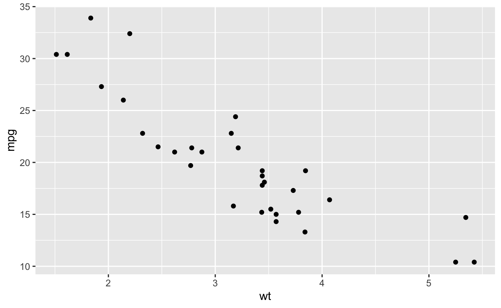
We can change the data being plotted by picking a different column from the dataframe. For instance here we are plotting the horsepower(hp) versus miles per gallon(mpg). Also note that we can make the code more readable by placing proceeding layers on a different line after the plus sign. A common error is misplacing the plus sign. It must be trailing on the line before the next layer.
ggplot(mtcars, aes(x=hp, y=mpg)) +
geom_point()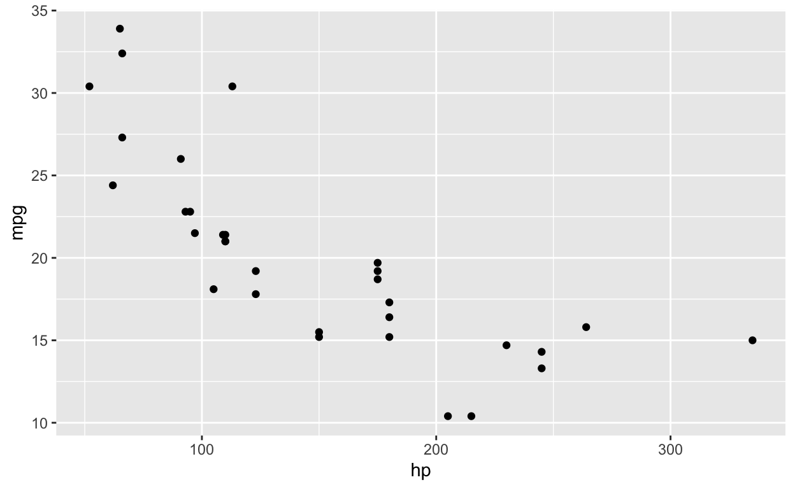
Exercise: Try building a scatterplot on your own. This time plot the variables corresponding to the number of cylinders and the type of transmission.
Exercise: Modify the scatterplot to plot horsepower instead of the type of transmission. Can you start to see a relationship with the data?
Adding Additional Information to the Plot
Title
We can add a title to the plot simply by adding another layer and the
ggtitle() function.
ggplot(mtcars, aes(x=hp, y=mpg)) +
geom_point() +
ggtitle("1974 Cars: Horsepower vs Miles Per Gallon")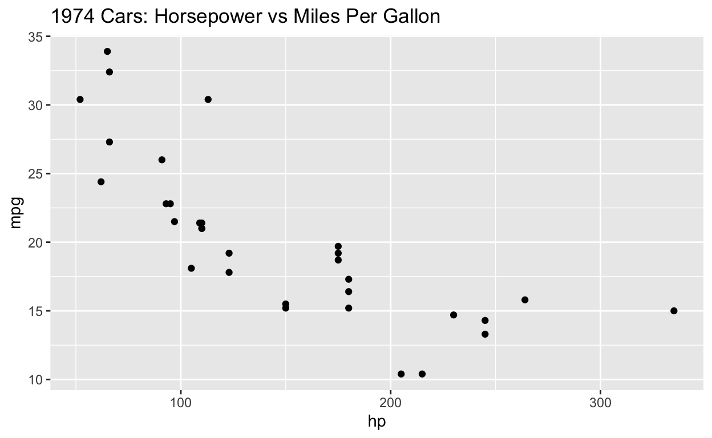
X and Y axis Labels
We can overwrite the default labels and add our own to the x and y axis
by using the xlab() and ylab() functions respectively.
ggplot(mtcars, aes(x=hp, y=mpg)) +
geom_point() +
ggtitle("1974 Cars: Horsepower vs Miles Per Gallon") +
ylab("miles per gallon") +
xlab("horsepower")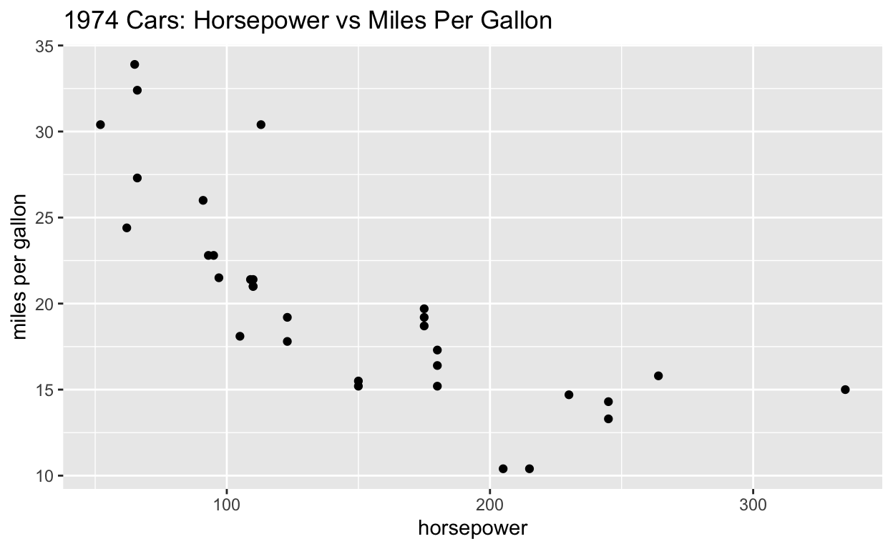
Set title and axis labels in one layer
ggplot(mtcars, aes(x=hp, y=mpg, alpha = 0.5)) +
geom_point() +
labs(x = "Horepower",
y = "Miles Per Gallon",
title = "Horsepower vs Miles Per Gallon Scatterplot",
subtitle = "Motor Trend Car Road Tests - 1974",
caption = "Smith et al. 1974")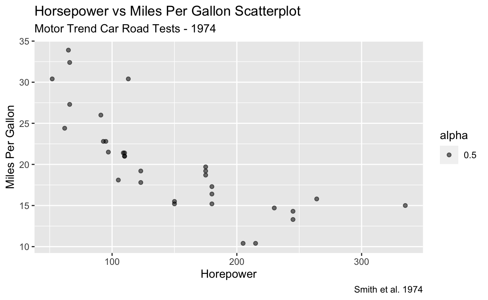
Notice that we also added an alpha aesthetic which helps us visualize
overlapping points. We can add a show.legend = FALSE argument to the
geom_point function to remove the alpha legend and clean up the plot
figure. Let’s try it. You can also specify a vector of aesthetics to
display.
Check the documentation ?geom_point.
Getting Geometry Specific Help
We can easily add a third bit of information to the plot by using the color aesthetic. Each geometry has its own list of aesthetics that you can add and modify. Consult the help page for each one.
?geom_point() # bring up the help page for geom_point()Adding the Color Aesthetic
Here we are adding the color aesthetic.
ggplot(mtcars, aes(x=hp, y=mpg, color=cyl)) +
geom_point() +
ggtitle("Modern Cars: Horsepower vs Miles Per Gallon") +
ylab("miles per gallon") +
xlab("horsepower")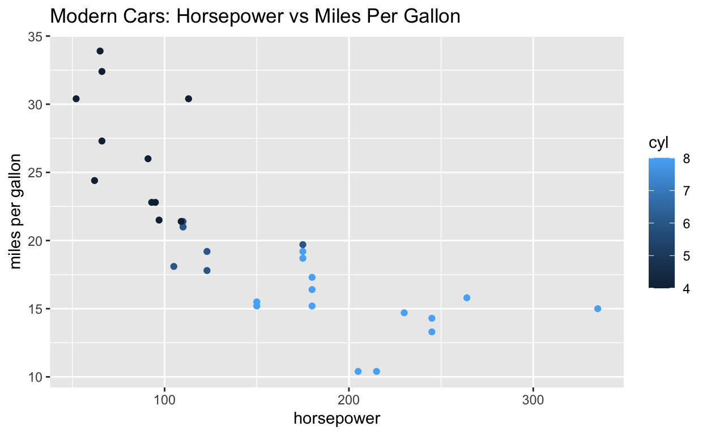
And we can relabel the legend title for the new color aesthetic to make it more readable.
ggplot(mtcars, aes(x=hp, y=mpg, color=cyl)) +
geom_point() +
ggtitle("Modern Cars: Horsepower vs Miles Per Gallon") +
ylab("miles per gallon") +
xlab("horsepower") +
labs(color="#cylinders")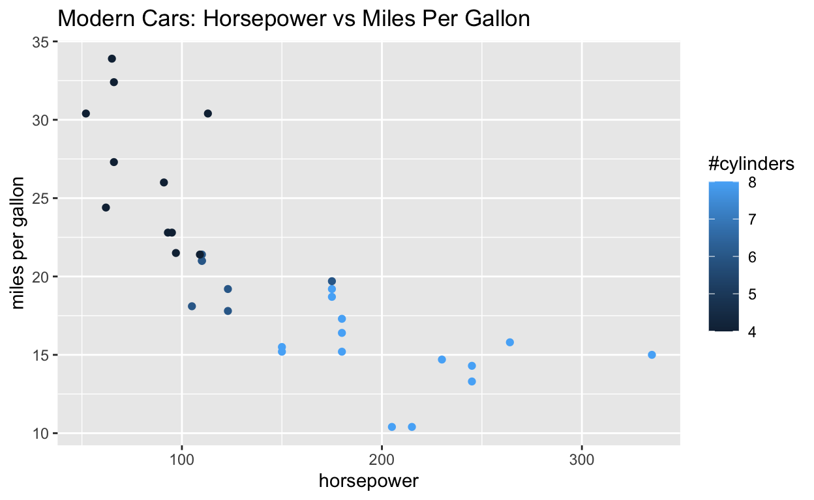
A Fourth Aesthetic
You can even continue to add even more information to the plot through additional aesthetics. Though this might be a bit much.
ggplot(mtcars, aes(x=hp, y=mpg, color=cyl, size = wt)) +
geom_point() +
ggtitle("Modern Cars: Horsepower vs Miles Per Gallon") +
ylab("miles per gallon") +
xlab("horsepower") +
labs(color="#cylinders", size="weight (x1000lb)")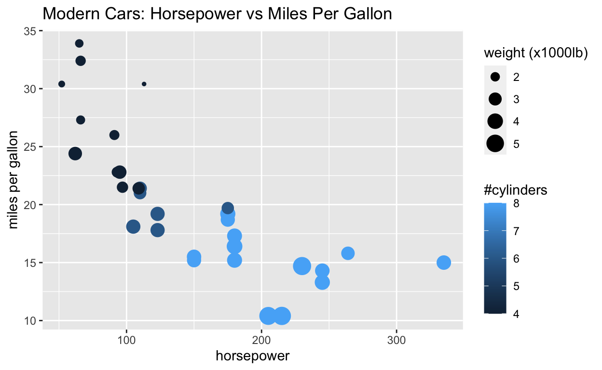
Instead we can use a specific value instead of the wt variable to adjust the size of the dots.
ggplot(mtcars, aes(x=hp, y=mpg, color=cyl, size = 3)) +
geom_point() +
ggtitle("Modern Cars: Horsepower vs Miles Per Gallon") +
ylab("miles per gallon") +
xlab("horsepower") +
labs(color="#cylinders")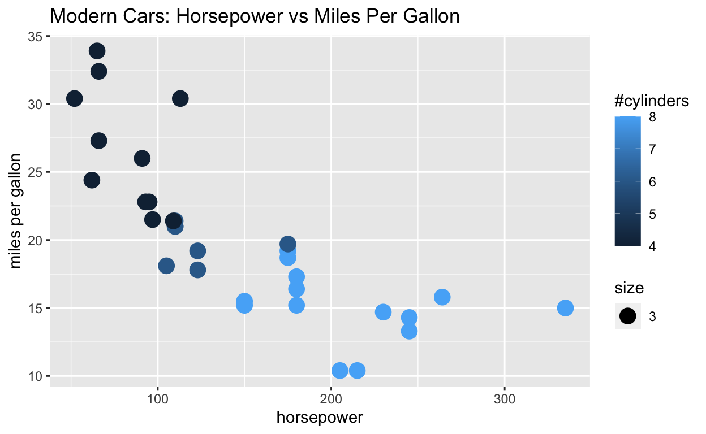
Other Geometries
There are many other geometries that you can use in your plots.
https://ggplot2.tidyverse.org/reference
Here is a short list:
geom_point(): scatterplot
geom_line(): lines connecting points by increasing value of x
geom_path(): lines connecting points in sequence of appearance
geom_boxplot(): box and whiskers plot for categorical variables
geom_bar(): bar charts for categorical x axis
geom_col(): bar chart where heights of the bars represent values in the
data
geom_histogram(): histogram for continuous x axis
geom_violin(): distribution kernel of data dispersion
geom_smooth(): function line based on data
geom_bin2d(): heatmap of 2d bin counts
geom_contour(): 2d contours of a 3d surface
geom_count(): count overlapping points
geom_density(): smoothed density estimates
geom_dotplot(): dot plot
geom_hex(): hexagonal heatmap of 2d bin counts
geom_freqpoly(): histogram and frequency polygons
geom_jitter(): jittered point plot geom_polygon(): polygons
geom_line()
But utilizing the right plot to efficiently show your data is key. Here we swapped the geom_point for geom_line to see what would happen. You could also try something like geom_bin2d()
ggplot(mtcars, aes(x=hp, y=mpg, color=cyl)) +
geom_line() +
ggtitle("Modern Cars: Horsepower vs Miles Per Gallon") +
ylab("miles per gallon") +
xlab("horsepower") +
labs(color="#cylinders")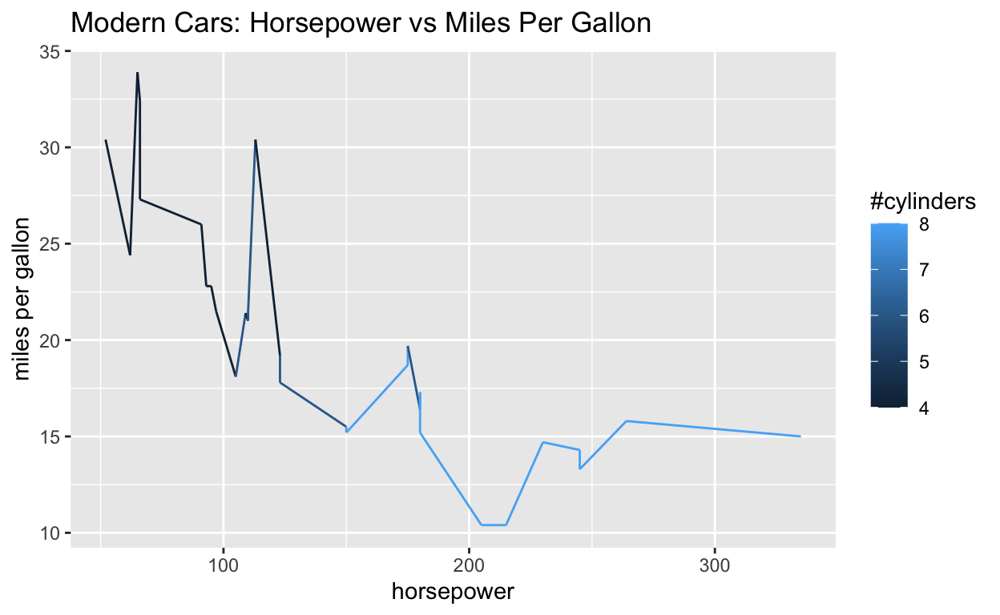
Plotting the Categories as a Bar Chart with geom_col()
The geom_col() geometry is a type of bar plot that uses the heights of the bars to represent values in the data. Let’s look at plotting this type of data for the cars in this dataset.
?geom_col()head(mtcars) mpg cyl disp hp drat wt qsec vs am gear carb
Mazda RX4 21.0 6 160 110 3.90 2.620 16.46 0 1 4 4
Mazda RX4 Wag 21.0 6 160 110 3.90 2.875 17.02 0 1 4 4
Datsun 710 22.8 4 108 93 3.85 2.320 18.61 1 1 4 1
Hornet 4 Drive 21.4 6 258 110 3.08 3.215 19.44 1 0 3 1
Hornet Sportabout 18.7 8 360 175 3.15 3.440 17.02 0 0 3 2
Valiant 18.1 6 225 105 2.76 3.460 20.22 1 0 3 1Looking back at the data structure of mtcars, we see that the names of
the cars are stored as the row names of the data frame. We can access
this using the rownames()function and use it in subsequent plots.
Q: What was another way to address this issue, discussed in the first block?
rownames(mtcars) [1] "Mazda RX4" "Mazda RX4 Wag" "Datsun 710"
[4] "Hornet 4 Drive" "Hornet Sportabout" "Valiant"
[7] "Duster 360" "Merc 240D" "Merc 230"
[10] "Merc 280" "Merc 280C" "Merc 450SE"
[13] "Merc 450SL" "Merc 450SLC" "Cadillac Fleetwood"
[16] "Lincoln Continental" "Chrysler Imperial" "Fiat 128"
[19] "Honda Civic" "Toyota Corolla" "Toyota Corona"
[22] "Dodge Challenger" "AMC Javelin" "Camaro Z28"
[25] "Pontiac Firebird" "Fiat X1-9" "Porsche 914-2"
[28] "Lotus Europa" "Ford Pantera L" "Ferrari Dino"
[31] "Maserati Bora" "Volvo 142E" ggplot(mtcars, aes(x=rownames(mtcars), y=mpg)) +
geom_col() +
ggtitle("1974 Cars: Miles Per Gallon")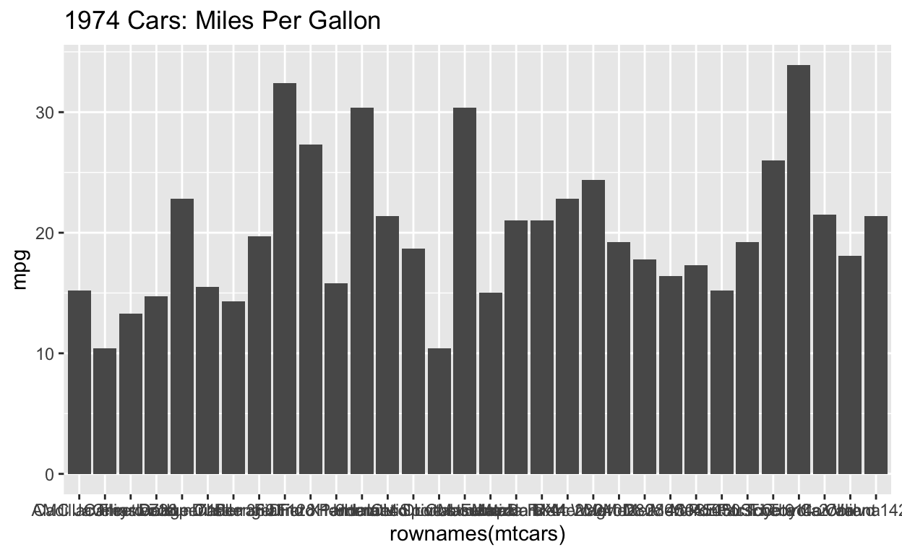
You will learn other ways to make this more legible later. For a quick fix we can swap the x and y mappings.
ggplot(mtcars, aes(y=rownames(mtcars), x=mpg)) +
geom_col() +
ggtitle("1974 Cars: Miles Per Gallon")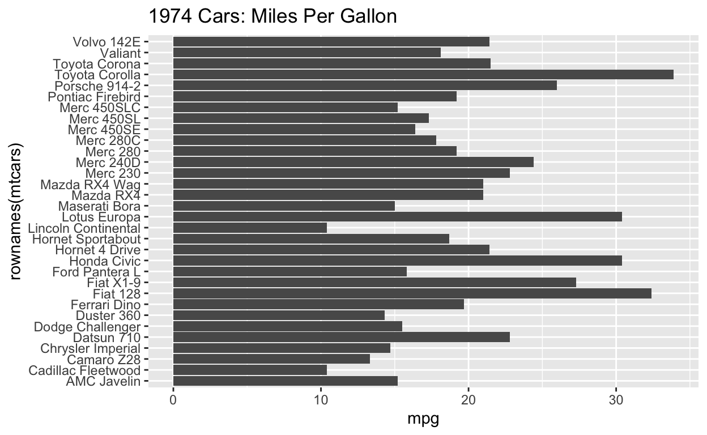
We can reorder the data to make it easier to visualize important information.
ggplot(mtcars, aes(y=reorder(rownames(mtcars), mpg), x=mpg)) +
geom_col() +
ggtitle("1974 Cars: Ranked by Miles Per Gallon")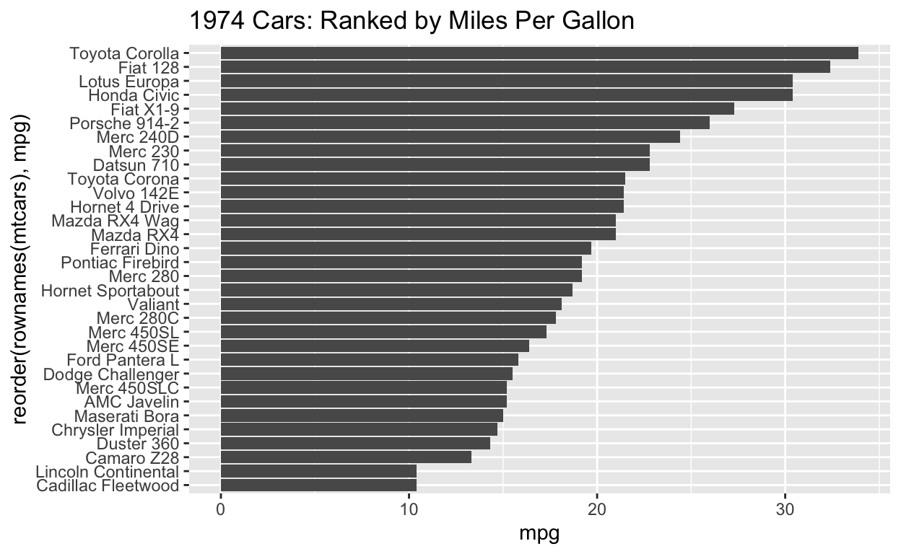
Exercise: Plot a bar chart using geom_col() with the mtcar dataset. Plot
the names of the cars ranked by the weight of each car. Try adding a
third aesthetic color for horsepower.
Multiple Geometries
You can also add another layer of geometry to the same ggplot. Notice
you can have two separate aesthetic declarations and they have moved
from the ggplot function to their respective geom_ functions.
# ggplot(data = <DATA>, mapping = aes(<MAPPINGS>)) +
# <GEOM_FUNCTION1>() +
# <GEOM_FUNCTION2>()
# OR
# ggplot(data = <DATA>) +
# <GEOM_FUNCTION1>(mapping = aes(<MAPPINGS>)) +
# <GEOM_FUNCTION2>(mapping = aes(<MAPPINGS>))
ggplot(mtcars) +
geom_point(aes(x=hp, y=mpg)) +
geom_line(aes(x=hp, y=mpg, color=cyl)) +
ggtitle("Modern Cars: Horsepower vs Miles Per Gallon") +
ylab("miles per gallon") +
xlab("horsepower") +
labs(color="#cylinders")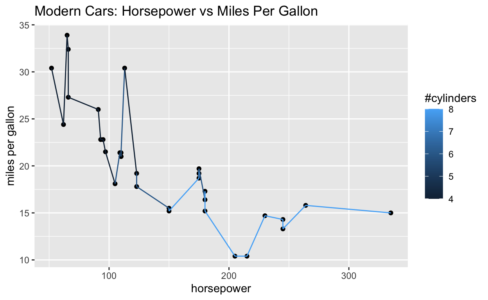
This particular geometry addition isn’t very useful.
Exercise: Try adding geom_smooth() instead of geom_line().
Saving Plots
Saving these plots is easy! Simply call the ggsave() function to save
the last plot that you created. You can specify the file format by
changing the extension after the filename.
ggsave("plot.png") # saves the last plot to a PNG file in the current working directoryYou can also specify the dots per inch and the width of height of the image to ensure publication quality figures upon saving.
ggsave("plot-highres.png", dpi = 300, width = 8, height = 4) # you can specify the dots per inch (dpi) and the width and height parametersExercise: Try saving the last plot that we produced as a jpg. Can you navigate to where it saved and open it on your computer?
More Examples
Lets take a look at gallery resource to preview different plot types and
get ideas for our own plots.
https://r-graph-gallery.com/
SessionInfo
R version 4.2.2 (2022-10-31)
Platform: aarch64-apple-darwin20 (64-bit)
Running under: macOS Monterey 12.6
Matrix products: default
BLAS: /Library/Frameworks/R.framework/Versions/4.2-arm64/Resources/lib/libRblas.0.dylib
LAPACK: /Library/Frameworks/R.framework/Versions/4.2-arm64/Resources/lib/libRlapack.dylib
locale:
[1] en_US.UTF-8/en_US.UTF-8/en_US.UTF-8/C/en_US.UTF-8/en_US.UTF-8
attached base packages:
[1] stats graphics grDevices utils datasets methods
[7] base
other attached packages:
[1] forcats_0.5.2 stringr_1.4.1 dplyr_1.0.10 purrr_0.3.5
[5] readr_2.1.3 tidyr_1.2.1 tibble_3.1.8 ggplot2_3.4.0
[9] tidyverse_1.3.2
loaded via a namespace (and not attached):
[1] lubridate_1.8.0 assertthat_0.2.1 digest_0.6.30
[4] utf8_1.2.2 R6_2.5.1 cellranger_1.1.0
[7] backports_1.4.1 reprex_2.0.2 evaluate_0.17
[10] httr_1.4.4 highr_0.9 pillar_1.8.1
[13] rlang_1.0.6 googlesheets4_1.0.1 readxl_1.4.1
[16] rstudioapi_0.14 jquerylib_0.1.4 rmarkdown_2.17
[19] labeling_0.4.2 googledrive_2.0.0 munsell_0.5.0
[22] broom_1.0.1 compiler_4.2.2 modelr_0.1.9
[25] xfun_0.34 pkgconfig_2.0.3 htmltools_0.5.3
[28] downlit_0.4.2 tidyselect_1.2.0 fansi_1.0.3
[31] crayon_1.5.2 tzdb_0.3.0 dbplyr_2.2.1
[34] withr_2.5.0 grid_4.2.2 jsonlite_1.8.3
[37] gtable_0.3.1 lifecycle_1.0.3 DBI_1.1.3
[40] magrittr_2.0.3 scales_1.2.1 cli_3.4.1
[43] stringi_1.7.8 cachem_1.0.6 farver_2.1.1
[46] fs_1.5.2 xml2_1.3.3 bslib_0.4.1
[49] ellipsis_0.3.2 generics_0.1.3 vctrs_0.5.0
[52] distill_1.5 tools_4.2.2 glue_1.6.2
[55] hms_1.1.2 fastmap_1.1.0 yaml_2.3.6
[58] colorspace_2.0-3 gargle_1.2.1 rvest_1.0.3
[61] memoise_2.0.1 knitr_1.40 haven_2.5.1
[64] sass_0.4.2